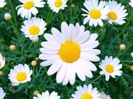

FLOR FAV
Las rosas rojas me gustan por su aroma, su color y porque son símbolo de pureza, inocencia, nuevos comienzos y amor eterno.
Las rosas rojas me gustan por su aroma, su color y porque son símbolo de pureza, inocencia, nuevos comienzos y amor eterno.
| Rosa Blanca | Rosa Roja | Margaritas | Girasol | Lirios |
 |
 |
| Rosa Blanca: Las rosas blancas simbolizan pureza, inocencia, amor eterno y nuevo comienzo. Son un símbolo popular en bodas, representando el inicio de una nueva vida juntos. También pueden representar respeto, consuelo y paz en situaciones de duelo. En algunos casos, pueden expresar agradecimiento o sinceridad. | Rosa Roja: Las rosas rojas simbolizan el amor, la pasión, el romance y el deseo profundo. También pueden representar respeto, admiración y gratitud, especialmente en relaciones de amistad o familia. | Margaritas: Las margaritas blancas representan la inocencia y la pureza, mientras que las margaritas amarillas simbolizan la felicidad y la amistad. Las margaritas rojas representan el amor y la pasión, y las margaritas rosas representan el amor y la gratitud. | Girasol: El girasol es el símbolo del Sol y simboliza el amor y la admiración. Pero también la felicidad, la vitalidad, el positivismo y la energía. En la cultura china simboliza una larga vida y buena suerte. | Lirios: El lirio tiene un significado general de pureza, inocencia y belleza. Los lirios blancos simbolizan pureza y renacimiento, los rojos representan amor y pasión, los amarillos se asocian con la felicidad y la alegría, y los naranjas con la pasión y la energía creativa. |